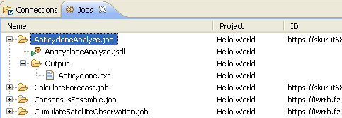

For finished jobs (containg status DONE) you can download output files created by job. Only files, which were not moved to Storage Element (using Data Staging) can be downloaded!
To download output files use one of the following possibilities:
After successfully downloading, output files will be visibled in folder Output for releated Job:
